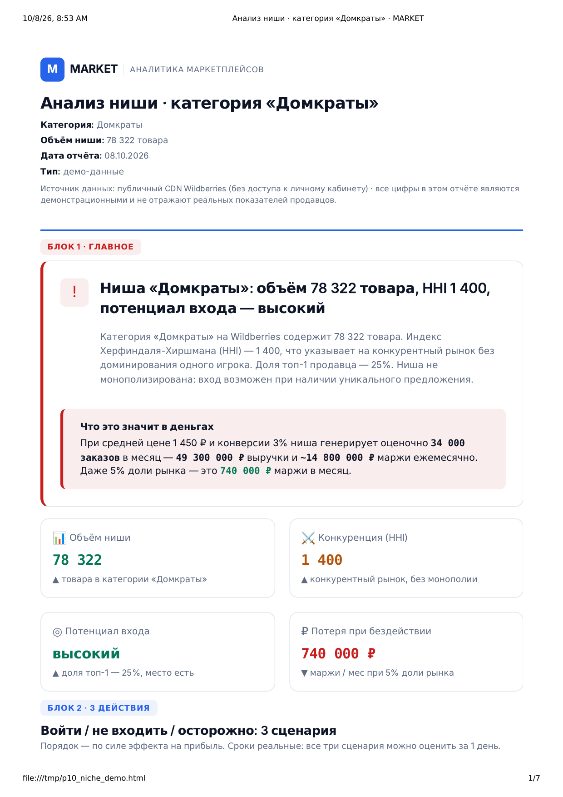
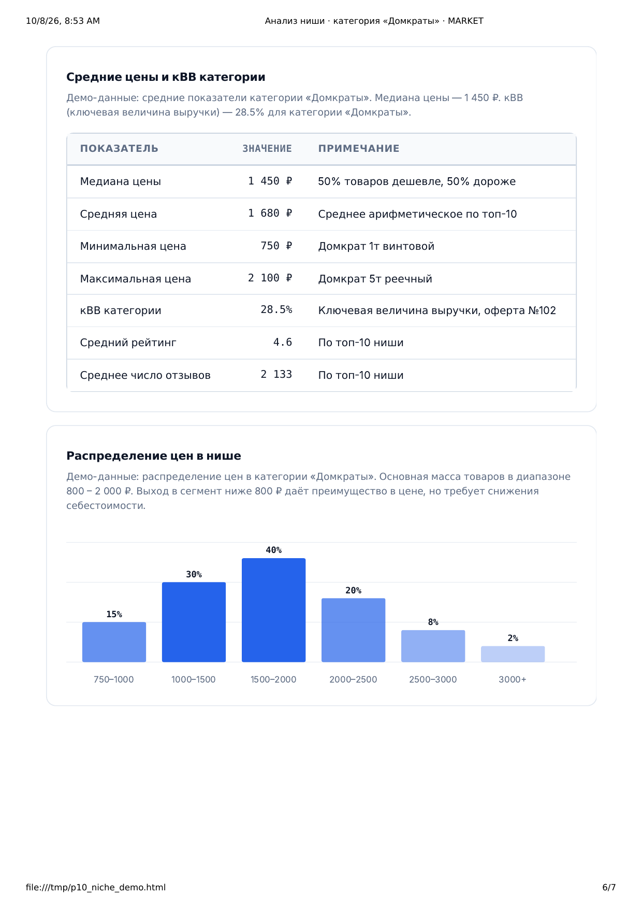

Анализ ниши Wildberries
Стоит ли входить в нишу и с какой ценой
Разбираю нишу целиком: сколько в ней денег, насколько она занята, где свободные ценовые коридоры и какие дефекты у товаров лидеров. На выходе — вывод «входить или нет» и цена, с которой имеет смысл стартовать. Отчёт за три дня.
Оплата после того, как отчёт готов. Предоплата не нужна.
Что получите
пять блоков отчёта, каждый отвечает на свой вопрос-
ГЛАВНОЕ — есть ли место в нише
Один вывод: входить, не входить или входить в конкретный сегмент — и почему. Рядом четыре KPI ниши: медиана цены, концентрация (HHI), число продавцов и доля отзывов 1–3★.
Пример: «Ниша фрагментирована: крупного игрока нет, свободный коридор 2 777–4 663 ₽, в выдаче всего 2 карточки»
-
3 ДЕЙСТВИЯ — с чего начать
Три задачи по приоритету: в какой сегмент заходить, с какой ценой, на каком дефекте лидеров отыграть. У каждой — ожидаемый эффект и срок.
Пример: «1. Стартовать в коридоре 3 000–3 500 ₽ — конкуренция 2 карточки, срок 7 дней»
-
ПОЧЕМУ МЫ — откуда цифры
Источник данных и проверки качества, чтобы вы могли оценить, насколько цифрам можно верить. Не «мы посмотрели», а схема: сколько карточек разобрано, какая формула применена, на какую дату взяты данные.
Пример: «Публичный CDN Wildberries, 200+ карточек категории, HHI и медиана рассчитаны на дату разбора»
-
СТРАХ ПОТЕРИ — цена ошибки
Сколько стоит вложиться в закупку и не продать: сколько денег замораживается в товаре, который не пойдёт, и как быстро ниша может закрыться, если лидер снизит цену.
Пример: «Партия на 200 шт × 420 ₽ = 84 000 ₽ в товаре. При ошибке в нише это деньги на складе без движения»
-
ДЕТАЛИ — таблицы по нише
Всё, что подтверждает выводы: общая картина ниши (медиана цены, средний рейтинг, доля 1–3★, число продавцов), таблица ценовых сегментов, топ-10 конкурентов, свободные коридоры и топ-10 системных дефектов из отзывов.
Пример: «Сегмент 2 777–4 663 ₽ — 2 карточки, медиана 3 420 ₽, дефект №1 „не соответствует комплектации“ — 21 % отзывов»
Как работает
три шага, без встреч и созвонов-
Заявка
Называете категорию или ключевой запрос и, если есть, ориентиры: бюджет на закупку и желаемую маржу. Больше ничего не нужно.
-
Анализ
Собираю карточки категории, считаю медиану цены, концентрацию (HHI), свободные ценовые коридоры, разбираю отзывы лидеров и системные дефекты.
-
Отчёт
Получаете отчёт из 5 блоков в PDF и в интерактивном HTML: смотрите, задаёте вопросы, платите после. Если анализ не получился по моей причине — оплата не берётся.
Пример отчёта
два фрагмента из демо-отчётаНиже — фрагменты демонстрационного отчёта по нише «домкрат». Цифры в примере — расчёт по демо-данным, а не по вашей категории.


Частые вопросы
семь вопросов, которые задают до заказаЧто нужно от меня?
Название категории или ключевой запрос (например, «домкрат») и, если есть, ваши ориентиры: бюджет на закупку, желаемая маржа. Больше ничего не требуется — данные публичные.
Нужен ли API-ключ Wildberries?
Нет. Анализ строится на публичном CDN Wildberries — поисковой выдаче и карточках, которые видит покупатель. Ключ Seller API и доступ в личный кабинет не нужны.
Сколько времени занимает анализ?
Три рабочих дня с момента получения запроса. Собираю карточки категории, считаю медиану, концентрацию и свободные коридоры.
Чем это отличается от разбора конкурента (P4)?
P4 разбирает конкретных конкурентов, которых вы уже знаете. P10 смотрит на нишу целиком: сколько в ней денег, насколько она занята, где свободные коридоры и стоит ли вообще входить.
Что если отчёт не подойдёт?
Оплата после того, как отчёт готов: сначала вы его смотрите, потом платите. Предоплата не нужна. Если анализ не получился по моей причине — запрос слишком широкий или данных не хватило, — оплата не берётся.
Работаете с начинающими?
Да. Анализ ниши чаще всего заказывают как раз перед входом в категорию: он показывает, есть ли вообще смысл запускать товар и с какой ценой, до того как вы вложитесь в закупку.
Что НЕ входит в анализ?
Поиск поставщика, закупка и запуск товара — это не аналитика. Юнит-экономика конкретных SKU (P1, P7) и разбор конкурентов (P4) — отдельные услуги. Прогноз даётся на 30 дней, долгосрочное планирование не входит.
Назовите категорию или запрос
Отвечаю письменно, звонков нет. Достаточно названия категории — остальное найду сам. Отчёт будет через три дня.